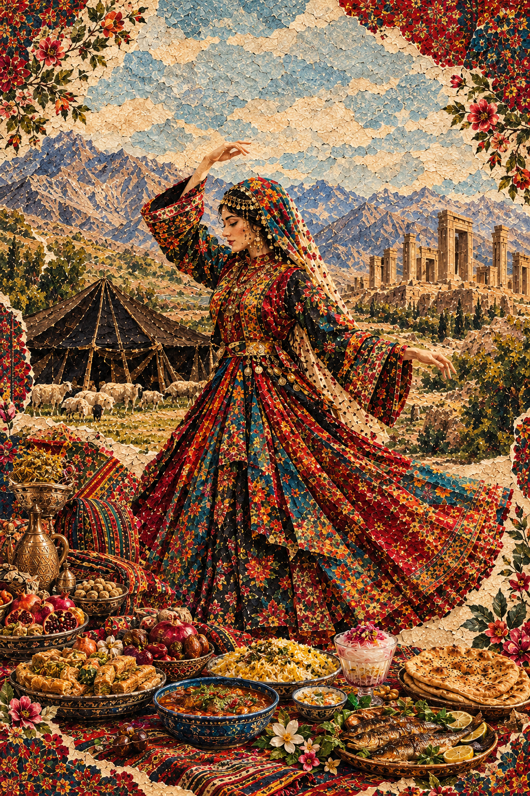
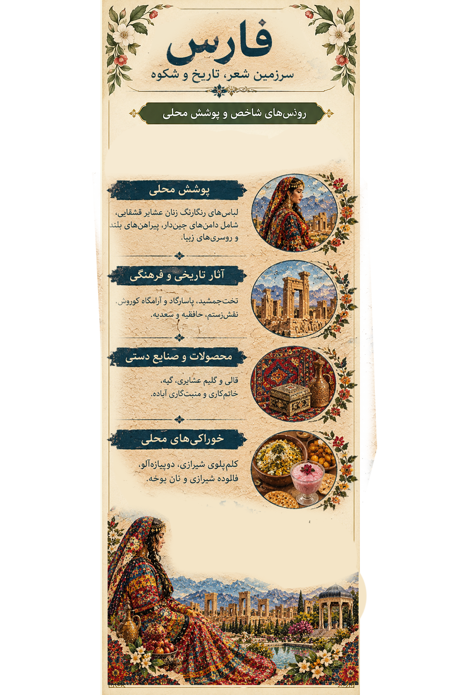

۱. تصویر فارس؛ روایت یک سرزمین1. Fars in Art: A Land's Story
در این اثر، پوشش رنگارنگ زن قشقایی در کنار چادر عشایری، کوهستان و نشانههایی از تاریخ فارس قرار گرفتهاند. هر نقش و رنگ، بخشی از پیوند مردم این سرزمین با فرهنگ و محیط زندگیشان را روایت میکند.This artwork brings together the colorful dress of a Qashqai woman, a nomadic tent, mountains and symbols of Fars's history. Each color and pattern reflects the connection between local culture and the landscape.

اثر هنری فارس از مجموعه «ایران، هزار رنگ»The Fars artwork from “Iran, A Thousand Colors”
این تصویر، اثر هنری مجموعه است؛ توضیحات این صفحه برای معرفی فرهنگی و تاریخی استان فارس ارائه شدهاند.This is the artwork created for the collection. The text on this page provides cultural and historical context about Fars Province.
۲. پوشش زنان فارس؛ شکوه رنگ و حرکت2. Women's Dress in Fars: Color and Movement
پوشاک سنتی زنان فارس یکدست و یکسان نیست و با توجه به گروه فرهنگی، محل زندگی، سبک زندگی و مناسبتها تفاوت دارد. پوشش زنان قشقایی از نمونههای شناختهشده این تنوع است.Traditional women's clothing in Fars is not uniform. It varies according to cultural group, place, lifestyle and occasion. Qashqai women's dress is a well-known example of this diversity.

لیبل اختصاصی فارس؛ راهنمای تصویری پوشش و فرهنگ منطقهFars exhibition label: a visual guide to regional dress and culture
پوشش زنان قشقاییQashqai Women's Dress
در برخی نمونههای پوشاک زنان قشقایی، دامنهای پرچین و رنگارنگ، پیراهن بلند و روسری یا سربند از اجزای چشمگیر لباساند. رنگها، پارچهها و شیوههای دوخت ممکن است میان نواحی و نسلهای مختلف تفاوت داشته باشند.Some Qashqai women's dress styles feature full colorful skirts, long dresses and headscarves. Fabrics, colors and sewing styles may differ across local areas and generations.
پوشاک عشایری و روستاییNomadic and Rural Clothing
پوشاک عشایری و روستایی بخشی از هویت فرهنگی فارس است. برای ثبت دقیق نام لباسها و نسبتدادن هر نوع پوشش به یک جامعه یا ناحیه مشخص، استفاده از پژوهشهای مردمشناسی و روایتهای مستند محلی اهمیت دارد.Nomadic and rural clothing forms part of Fars's cultural identity. Ethnographic research and documented local accounts are important for identifying garments and associating them with particular communities.
۳. شهرها و نواحی فارس؛ تنوع در دل سرزمین3. Cities and Regions of Fars: Diversity Across the Land
استان فارس از شهرها، روستاها، دشتها و نواحی کوهستانی گوناگون تشکیل شده است. هر ناحیه با محصولات محلی، شیوه زندگی، معماری و روایتهای فرهنگی خود شناخته میشود.Fars includes cities, villages, plains and mountain areas. Each region has its own local products, ways of life, architecture and cultural stories.
شیرازShiraz
شیراز با باغهای تاریخی، شعر و ادبیات، بازارهای سنتی، معماری و خوراکهای محلی شناخته میشود.Shiraz is known for historic gardens, poetry, traditional markets, architecture and local cuisine.
مناطق قشقاییQashqai Areas
فرهنگ قشقایی با کوچ فصلی، دامداری، صنایعدستی و مهارتهای بافندگی پیوند دارد.Qashqai culture is connected with seasonal migration, herding, handicrafts and weaving skills.
آبادهAbadeh
آباده به هنر منبتکاری چوب شناخته میشود؛ مهارتی که در صنایعدستی منطقه جایگاه مهمی دارد.Abadeh is known for woodcarving, an important local handicraft.
استهبانEstahban
انجیر از محصولات شناختهشده استهبان است و باغداری بخشی از هویت کشاورزی این ناحیه را شکل میدهد.Figs are a well-known product of Estahban, where orchards contribute to the local agricultural identity.
۴. تاریخ، معماری و طبیعت4. History, Architecture and Nature
تخت جمشیدPersepolis
از مهمترین محوطههای باستانی ایران و یادگار دوره هخامنشی که با تالارها، پلکانها و نقشبرجستههای تاریخی شناخته میشود.One of Iran's most important archaeological sites, dating to the Achaemenid period and known for its halls, stairways and reliefs.
پاسارگادPasargadae
مجموعهای تاریخی از دوره هخامنشی که آرامگاه کوروش از شناختهشدهترین بناهای آن است.A historic Achaemenid site whose best-known monument is the Tomb of Cyrus.
نقش رستمNaqsh-e Rostam
محوطهای تاریخی با آرامگاههای صخرهای شاهان هخامنشی و نقشبرجستههای باستانی.A historic site with Achaemenid rock-cut royal tombs and ancient reliefs.
باغ ارم و مجموعه وکیلEram Garden and Vakil Complex
از جاذبههای شناختهشده شیراز که جلوههایی از باغسازی، معماری و زندگی شهری را نشان میدهند.Well-known Shiraz landmarks reflecting garden design, architecture and urban life.
۵. طعمهای اصیل فارس5. The Flavors of Fars
خوراکهای محلی بخشی از فرهنگ مهماننوازی فارس هستند. دستور پخت و مواد اولیه ممکن است از خانوادهای به خانواده دیگر تفاوت داشته باشند.Local dishes are part of Fars's hospitality traditions. Recipes and ingredients may vary from family to family.
کلمپلو شیرازیShirazi Kalam Polo
غذایی شناختهشده با برنج، کلم، سبزیهای معطر و معمولاً کوفتهریزه.A well-known dish made with rice, cabbage, aromatic herbs and often small meatballs.
دوپیازه آلوDopiazeh Aloo
غذایی خانگی و محبوب که با سیبزمینی و پیاز تهیه میشود.A popular home-style dish made with potatoes and onions.
آش سبزی شیرازیShirazi Ash-e Sabzi
آشی شناختهشده که با سبزی و حبوبات تهیه میشود و برخی دستورها گوشت هم دارند.A traditional soup made with herbs and legumes; some recipes include meat.
فالوده شیرازیShirazi Faloodeh
یکی از خوراکیهای مشهور شیراز که معمولاً خنک سرو میشود.One of Shiraz's most famous chilled desserts.
مسقطیMasghati
شیرینیای ژلهمانند که در طعمها و شکلهای مختلف تهیه میشود.A jelly-like sweet prepared in different flavors and forms.
یوخه و رنگینکYukheh and Ranginak
از شیرینیهای سنتی شناختهشده در شیراز و بخشهایی از جنوب فارس.Traditional sweets associated with Shiraz and parts of southern Fars.
۶. محصولات محلی و صنایعدستی6. Local Products and Handicrafts
انجیر استهبانEstahban Figs
انجیر از محصولات شناختهشده این ناحیه و بخشی از ظرفیت باغداری استان است.Figs are a well-known product and part of the area's orchard economy.
خرما و مرکباتDates and Citrus
در نواحی گرمتر فارس، خرما و مرکبات از محصولات کشاورزی مهماند.Dates and citrus are important crops in warmer parts of Fars.
فرش و گبه قشقاییQashqai Carpets and Gabbeh
نقشها و رنگهای متنوع فرش و گبه، جلوهای از هنر نساجی عشایریاند.The varied patterns and colors of Qashqai carpets and gabbeh reflect nomadic textile arts.
منبت آباده و خاتم شیرازAbadeh Woodcarving and Shiraz Khatam
منبتکاری چوب در آباده و خاتمکاری در شیراز از صنایعدستی شناختهشده منطقهاند.Abadeh woodcarving and Shiraz khatam inlay are well-known regional crafts.
۷. منابع و مطالعه بیشتر7. Sources and Further Reading
این منابع نقطه شروعی برای شناخت تاریخ و میراث فرهنگی فارس هستند. برای جزئیات دقیق پوشاک محلی، بهتر است منابع مردمشناسی تخصصی و روایتهای مستند محلی نیز بررسی شوند.These resources are starting points for exploring Fars's history and cultural heritage. Specialist ethnographic sources and documented local accounts should also be consulted for detailed clothing information.
- UNESCO — Persepolis ؛ اطلاعات تخت جمشید
- UNESCO World Heritage Centre
- UNESCO Intangible Cultural Heritage
- Visit Iran
- Encyclopaedia Iranica
ذکر این منابع به معنی تأیید تکتک جزئیات صفحه از سوی آنها نیست؛ برای نسبتدادن پوشش مشخص به یک گروه محلی، منبع تخصصی جداگانه لازم است.Listing these resources does not mean they verify every detail on this page. Specific clothing attributions require dedicated references.